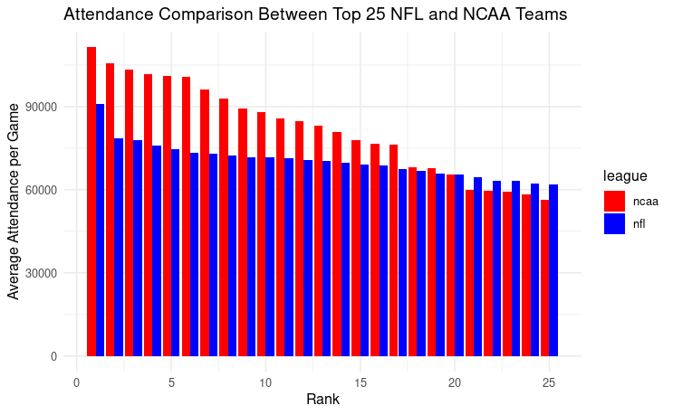

NCAA vs NFL: Why are NCAA fans more enthusiastic?
By Morgan Cheung | November 12, 2023

Introduction
In the world of American football, fans often blur the lines between their enthusiasm for college and professional football. Nevertheless, recent attendance data reveals that NFL games are drawing fewer spectators compared to NCAA football. This article delves into attendance records to shed light on an intriguing question: Is the NCAA football experience more exhilarating for spectators than its professional counterpart, the NFL? We will explore both quantitative and qualitative factors that may explain why the NCAA consistently draws larger crowds.
Metrics Explained
To uncover why there exists a disparity in spectator enthusiasm, let’s look at a variety of metrics that can be categorized into two groups: quantitative and qualitative.
Quantitative factors
Hypothesis #1: NCAA Football is more exciting due primarily to these 4 factors
1. Passing Yards per Game: Passing plays in football often lead to electrifying moments that captivate audiences. Higher passing yards per game can suggest a more dynamic and crowd-pleasing style of play.
2. Points per Game: Scoring is the essence of football, and high-scoring games tend to keep fans on the edge of their seats. We examine whether NCAA games offer more points and excitement than their NFL counterparts.
3. Rushing Yards per Game: If we understand passing yards per game to be a measure of excitement, we should also consider rushing yards. Would a fan rather see short yardage gains or a running back dodging and forcing his way through the defense for a ten or twenty yard gain?
4. Sacks per Game: Sacks, which occur when the defense tackles the quarterback behind the line of scrimmage, are moments of high tension and often heralded by fans. We explore whether more sacks per game correlate with increased attendance.
Qualitative factors
Hypothesis #2: Regional Identity
NCAA football often reflects regional pride and rivalries, tapping into the strong emotions and traditions associated with college sports.
Hypothesis #3: Alumni Identity
The deep connection between alumni and their alma mater's football teams can create a passionate and loyal fan base.
Hypothesis #4: Culture
The unique cultures surrounding college football programs, including tailgating, mascots, and traditions, add an extra layer of excitement to the NCAA experience.
Hypothesis #5: Accessibility
NCAA games, played at college campuses across the nation, are often more accessible and affordable for fans compared to NFL games in major cities.
Visuals



Explanation of Visuals
Figure 1:
This information was the basis of my curiosity. Here, the top 25 teams in the NFL (blue) are compared against the top 25 teams in the NCAA Division 1 FBS league (the NCAA’s highest performing football division)(red). Along the x-axis are the rankings of the teams, and along the y-axis is the average attendance per home game of the 2019 season in both leagues.
Figure 2-5:
Each statistic represented on each of the figures shares the majority of characteristics. On the x-axis are the top 25 teams in order of the NFL and NCAA in 2019. On the y-axis is the observed statistic. The blue and red lines correspond to the NFL and NCAA respectively.
Analysis: The findings from the graph are consistent with the aforementioned hypothesis. On average, the NCAA statistics - passing yards, rushing yards, sacks, and points per game - are higher than those of the NFL.
Analysis
By analyzing these metrics against my hypotheses, I aim to shed light on why NCAA football games offer a more exciting experience for spectators compared to the NFL. While both leagues have their unique appeal, the factors I've explored indicate that college football possesses a combination of regional pride, alumni devotion, cultural richness, and accessibility that resonate with fans. Furthermore, the quantitative factors suggest that the style of play in NCAA football, characterized by high-scoring games and explosive plays, adds to the excitement.
It should also be acknowledged that while these factors align well with my original hypotheses, there is an abundance of other causal variables that could very well influence the attendance disparity between the two leagues. These measurements are simply general statistics that, in my experience, have contributed to a noisier crowd and more engaged fans.
The future of football spectatorship will also be influenced by ongoing changes in the NCAA, including the introduction of NIL regulations and conference realignment. These developments could further impact the popularity and attendance figures of college football.
While the NFL remains the pinnacle of professional football, the college game is not to be underestimated. With a unique combination of regional identity, alumni passion, and an exciting style of play, NCAA football continues to capture the hearts of fans across the nation.
Works Cited
"University of Michigan 2019 Football Team Statistics & Results." Sports Reference, 2023, www.sports-reference.com/cfb/schools/michigan/2019.html](https://www.sports-reference.com/cfb/schools/michigan/2019.html).
"NFL Football Team Statistics." ESPN, 2019, www.espn.com/nfl/stats/_/view/team/season/2019/seasontype/2](https://www.espn.com/nfl/stats/_/view/team/season/2019/seasontype/2).
"2019 NCAA Football Team Statistics." NCAA, www.ncaa.com/stats/football/fbs/2019/team/466](https://www.ncaa.com/stats/football/fbs/2019/team/466).
"NCAA Football Attendance." NCAA, 2013, www.ncaa.org/sports/2013/11/19/ncaa-football-attendance.aspx](https://www.ncaa.org/sports/2013/11/19/ncaa-football-attendance.aspx).
"NFL Attendance." ESPN, www.espn.com/nfl/attendance](https://www.espn.com/nfl/attendance).
"Football Attendance: Comparing the NFL and NCAA." Winthrop Intelligence, 2012, winthropintelligence.com/2012/12/31/football-attendance-comparing-the-nfl-and-ncaa/#:~:text=Here's%20what%20we%20found%3A,pull%20in%20more%20fans%20overall](https://winthropintelligence.com/2012/12/31/football-attendance-comparing-the-nfl-and-ncaa/#:~:text=Here's%20what%20we%20found%3A,pull%20in%20more%20fans%20overall).
"Stadium Experience Fan Satisfaction Survey." Deloitte, www2.deloitte.com/us/en/pages/technology-media-and-telecommunications/articles/stadium-experience-fan-satisfaction-survey.html](https://www2.deloitte.com/us/en/pages/technology-media-and-telecommunications/articles/stadium-experience-fan-satisfaction-survey.html).